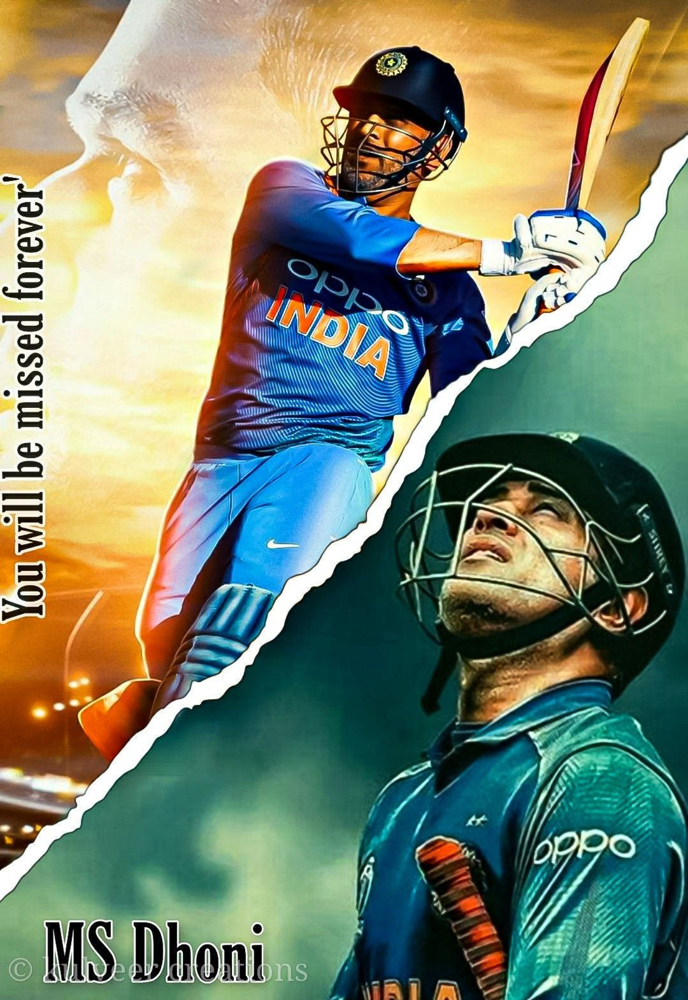
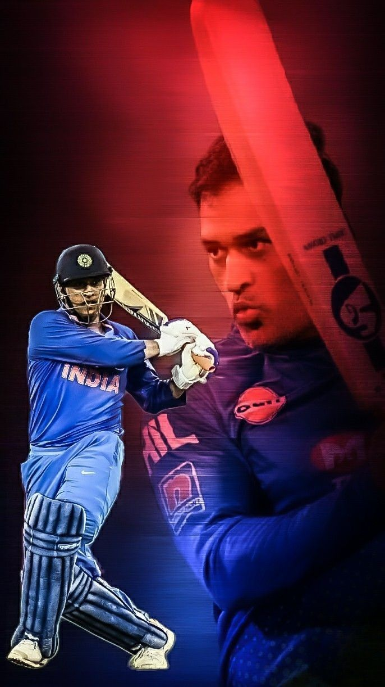

|  | In 2008, Dhoni was awarded India's highest sport honor Major Dhyan Chand Khel Ratna Award by Government of India. He received the fourth highest civilian award Padma Shri in 2009 and third highest civilian award Padma Bhushan in 2018. Dhoni holds an honorary rank of Lieutenant Colonel in the Parachute Regiment of the Indian Territorial Army which was presented to him by the Indian Army in 2011. He is one of the most popular cricketers in the world. |
|  | Dhoni was born on 7 July 1981 in Ranchi, Bihar (now in Jharkhand) in a Hindu Rajput family to Pan Singh and Devaki Devi. [4] His parents hailed from Lwali village in Uttar Pradesh (now Uttarakhand) and he was the youngest of three children.[5][6][7] His family spells the surname as "Dhauni".[8] |